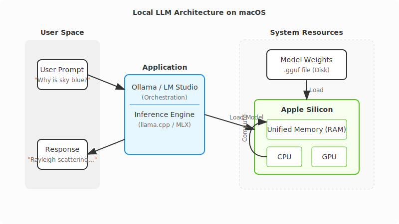
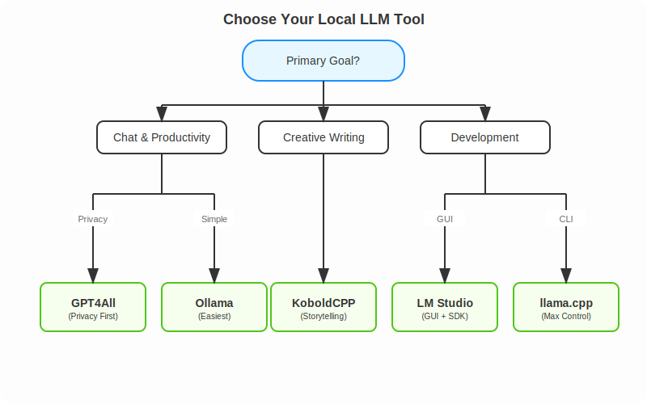

Quick-guide on Running LLMs Locally on macOS
Running Large Language Models (LLMs) locally on your Mac is a game-changer. It means faster responses, complete privacy, and zero API bills. But with so many tools popping up every week, which one should you choose?
This guide breaks down the top options—from dead-simple menu bar apps to full-control command-line tools. We'll cover what makes each special, their trade-offs, and how to get started.
Why Run Locally?
Before we dive into the tools, let's look at the benefits:
- 🔒 Privacy: Your data and prompts never leave your machine. Perfect for sensitive work.
- ⚡ Speed: No network latency. On Apple Silicon, responses can be faster than cloud APIs.
- 💰 Cost: One-time download. No monthly subscriptions or token fees.
- ✈️ Offline: Work from a plane, a cabin, or a coffee shop with spotty Wi-Fi.
Key Concepts for Beginners
If you're new to local LLMs, here are three terms you'll see often:
- Inference: The act of "running" the model to generate text.
- Quantization (GGUF): A technique to shrink model sizes with minimal quality loss. You'll see filenames like
llama-3-8b-Q4_K_M.gguf. TheQ4means "4-bit quantization"—it uses less RAM than the full 16-bit model. - Apple Silicon (Metal): Apple's M1/M2/M3 chips have "Unified Memory," allowing the CPU and GPU to share RAM. This makes Macs uniquely powerful for running huge models that would require expensive dedicated GPUs on a PC.
Prerequisites
- Hardware: A Mac with Apple Silicon (M1, M2, M3, or M4) is highly recommended. Intel Macs work but will be significantly slower.
- RAM:
- 8GB: Can run small models (Mistral 7B, Llama 3 8B) comfortably.
- 16GB+: Recommended for larger models and multitasking.
- Disk Space: Models take up space! Plan for ~10-20GB for a good starter library.

1. Ollama - The "Just Works" Option
Download: ollama.com
Think of Ollama as the "Docker for LLMs." It wraps the complex engine (llama.cpp) in a sleek, native package. You install it, run one command, and you're chatting. It handles all the messy details like model downloading and hardware acceleration automatically.
Best For
- Beginners who want to get started in 5 minutes.
- Developers who want a simple CLI tool.
Example Workflow
# 1. Download and run Llama 3 (it auto-downloads if needed)
ollama run llama3
# 2. Use it in your code via the local API
curl http://localhost:11434/api/generate -d '{
"model": "llama3",
"prompt": "Explain quantum computing to a 5-year-old",
"stream": false
}'
Pros & Cons
| ✅ Pros | ❌ Cons |
|---|---|
Easiest setup (Drag-and-drop .dmg) |
Core application is closed-source |
Great CLI (ollama list, ollama pull) |
Less granular control over generation parameters |
| Huge library of pre-configured models |
2. LM Studio - The Visual Explorer
Download: lmstudio.ai
LM Studio is for those who prefer a beautiful Graphical User Interface (GUI) over a terminal. It features a built-in "App Store" style browser for models, letting you search HuggingFace directly. It also supports Apple's native MLX format, which can be faster on some Macs.
Best For
- Visual learners who want to explore and test different models.
- Developers needing an OpenAI-compatible local server.
Example Workflow
LM Studio has a great Python SDK, but it also provides a local server that mimics OpenAI's API, meaning you can use standard libraries:
# Using the official LM Studio SDK
from lmstudio import LMStudio
client = LMStudio()
response = client.complete(
model="llama-3-8b",
prompt="Write a haiku about debugging."
)
print(response.content)
Pros & Cons
| ✅ Pros | ❌ Cons |
|---|---|
| Beautiful, easy-to-use interface | GUI is closed-source |
| Native support for both GGUF and MLX models | Larger download (~750MB) |
| Built-in RAG (Chat with your PDFs) |
3. llama.cpp - The Power User's Tool
Repo: github.com/ggml-org/llama.cpp
This is the engine that powers almost everyone else. If you want maximum performance, bleeding-edge features, or to embed an LLM into your own C++ application, this is the source. It's bare-metal, lightweight, and incredibly powerful.
Best For
- Engineers and Power Users.
- Running on older or constrained hardware.
Example Workflow
# 1. Install via Homebrew
brew install llama.cpp
# 2. Download a model manually (e.g., from HuggingFace)
huggingface-cli download TheBloke/Llama-3-8B-Instruct-GGUF --local-dir .
# 3. Run inference with full control
llama-cli -m llama-3-8b-instruct.Q4_K_M.gguf \
-p "Write a python script to sort a list" \
-n 512 \
--temp 0.7 \
--ctx-size 4096
Pros & Cons
| ✅ Pros | ❌ Cons |
|---|---|
| Ultimate control over every parameter | Steep learning curve (CLI only) |
| MIT Licensed (Open Source) | Manual model management |
| Extremely lightweight (<30MB) |
4. GPT4All - Privacy-First & RAG
Download: gpt4all.io
GPT4All focuses heavily on privacy and documents. Its standout feature is "LocalDocs," which lets you point the app at a folder of PDFs, notes, or code, and chat with them instantly. It runs completely offline with no telemetry.
Best For
- Privacy advocates.
- Users who want to chat with their own documents (RAG) easily.
Pros & Cons
| ✅ Pros | ❌ Cons |
|---|---|
| "LocalDocs" RAG is excellent and easy | GUI-only (no headless mode) |
| Completely offline & private | Heavier resource usage than Ollama |
| Cross-platform (Mac, Windows, Linux) |
5. KoboldCPP - For Storytellers
Repo: github.com/LostRuins/koboldcpp
A fork of llama.cpp tailored for creative writing and Role-Playing Games (RPGs). It features a web interface designed for long-form text generation, with tools to manage "World Info," character memory, and story consistency.
Best For
- Writers, Novelists, and RPG players.
Example Workflow
# 1. Download the single binary
wget https://github.com/LostRuins/koboldcpp/releases/latest/download/koboldcpp-mac.zip
# 2. Run it (launches a web server)
./koboldcpp --model llama-3-8b.gguf --port 5001 --smartcontext
Pros & Cons
| ✅ Pros | ❌ Cons |
|---|---|
| Best-in-class tools for creative writing | Niche UI (not great for coding/chat) |
| Single file executable (no installation) | AGPL license (restrictive for commercial use) |
Honorable Mention: MLX-LM
If you are a Python developer specifically targeting Apple Silicon, check out MLX-LM by Apple. It's a framework optimized specifically for the M-series chips. While less "user-friendly" than Ollama, it's often the fastest way to run models if you're comfortable with Python.
Summary: Which Tool is Right for You?
Here is a quick decision tree to help you decide:

Quick Comparison Table
| Tool | Interface | Difficulty | Best Feature |
|---|---|---|---|
| Ollama | CLI / Menu Bar | ⭐ (Easy) | "Just Works" experience |
| LM Studio | GUI | ⭐ (Easy) | Model discovery & UI |
| GPT4All | GUI | ⭐ (Easy) | Chat with local docs (RAG) |
| KoboldCPP | Web UI | ⭐⭐ (Medium) | Creative writing tools |
| llama.cpp | CLI | ⭐⭐⭐ (Hard) | Raw performance & control |
Final Thoughts
You can't really go wrong with any of these. They all run locally, they all respect your privacy, and they all leverage the incredible power of Apple Silicon.
- Start with Ollama if you just want to see what the fuss is about.
- Try LM Studio if you want to browse models visually.
- Dive into llama.cpp if you want to understand how it all works under the hood.